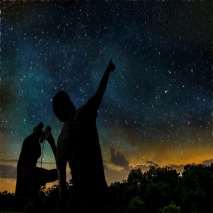
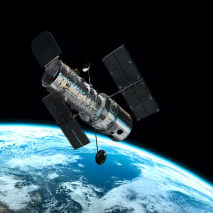
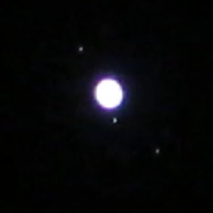

Welcome to the world of Stargazing!
This website aims to help you understand more about the amazing hobby of stargazing or spacial photography. You will learn a little bit of everything here, from tips of better night view to recommended equipment and a monthly updated calendar to help you keep track of everything!


How to start?
Thankfully we dont actually need anything to start stargazing! All you want to do is find a good spot to lay down and abserve the night sky. But if you want to a have a really good view, you need to travel away from your city, because cities are heavily light polluted, and that pollution conceal a huge ammount of the night stars.
What should I bring?

There are three basic things that you should always bring even if you are going to stay at your backyard. The first one is snacks (especially if you're going to watch things that take hours like meteor showers). The second one is your cellphone with an app or something similar that can help you locate the constelations and planetes you want to see. And the last thing is patience! You are going to observe a natural phenomenon, you cant control the exact time it is going to happen, so bring lots of patience!
What devices do I need?
The most basic one is a pair of binoculars. They are going to help you locate planets more easily and are going to allow you to have a better view of certain events like the supermoons. If you want to look at planets then you will need a telescope. Telescopes are harder to use (and a good one is a bit expensive) and will require you to have some practice first, but they are going to allow a close view of our solar system planets! you can even see the charming colossal saturn rings with them! And the least popular one is a high zoom camera. These cameras are not as poweful as a telescope, but they will let you take amazing pictures of the closer celestial bodies like the moon and jupiter. You can also use both camera and telescope together in order to take high quality photos and videos of the planets and stars!
Extra tips!
Always check the weather forecast before going to stargaze, you really dont want to have your night ruined because of rain or clouds.
Differently from the stars, planets have a "fixed" bright, so if the "star" you are looking at is not rapidly blinking, its actually a planet!